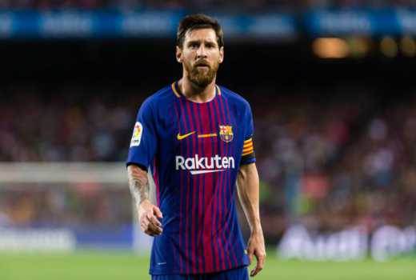

Lionel Messi
Mengenal lebih dekat sosok pesebakbola paling hebat sejagad ini tentu saja sangat penting, mengenalnya akan memberikan suntikan semangat membara didalam setiap pemain sepakbola dimanapun berada, mengingat sosok hebat ini tentu saja akan terus menjadi pemicu meraih prestasi dalam sepakbola. Biodata Lengkap Lionel Messi berikut akan memberikan gambaran, siapa sebenarnya Lionel Messi? Apa saja prestasinya? Seperti apa orangnya? Ini yang akan MessiUpdate share kepada anda semua tentunya.
Berikut Biodata Lengkap Lionel Messi : Nama Lengkap : Lionel Andres Messi
Tempat Lahir : Rosario, Santa Fe - Argentina
Tanggal Lahir : 24 Juni 1987
Nama Ayah : Jorge Horacio Messi
Nama Ibu : Celia María Cuccittini
Tinggi : 1.69 m
Posisi bermain : Penyerang
Informasi klub : FC. Barcelona
Nomer Punggung : 10
Karier junior : 1995–2000 di Newell's Old Boys dan 2000–2003 di Barcelona
Karier senior :
- Tahun 2003 di Barcelona C bermain 8 dan mencetak goal 5
- Tahun 2004–2005 di Barcelona B bermain 22 kali dan mencetak goal 6
- Tahun 2004–kini di Barcelona, bermain sebanyak 193 dan mencetak goal 136
( Hal ini sudah berubah karena Messi terus mencetak goal) Tim nasional Argantina : Bermain di tahun 2005 pada Argentina U-20 bermain sebanyak 7 dan gol 6, selanjutnya ditahun 2008, di Argentina U-23 bermain sebanyak 5 kali dan mencetak goal 2. Seterusnya di tahun 2005 sampai saat ini Messi bermain sebanyak 66 dengan jumlah goal 19.
Karir Lionel Messi
Messi membuat debut resminya untuk tim pertama pada 16 November 2003 berusia 16 tahun dan 145 hari, dalam pertandingan persahabatan melawan FC Porto. Kurang dari setahun kemudian, Frank Rijkaard biarkan dia membuat debut liga melawan RCD Espanyol pada 16 Oktober 2004 (pada usia 17 tahun dan 114 hari), menjadi pemain termuda ketiga yang pernah bermain untuk Barcelona dan klub pemain termuda yang bermain di La Liga.
Lionel Messi di Barcelona
Karir Internasional Lionel Messi
Pada Juni 2004, ia memulai debutnya bagi Argentina, bermain di pertandingan persahabatan U-20 melawan Paraguay. Pada tahun 2005 dia adalah bagian dari sebuah tim yang memenangkan Kejuaraan Dunia FIFA 2005 Pemuda di Belanda. Di sana, ia memenangkan Golden Ball dan Golden Shoe, mencetak gol di empat terakhir pertandingan Argentina dan jaring total enam untuk turnamen. Dia membuat debut internasional penuh pada 17 Agustus 2005 melawan Hungaria pada usia 18. Messi kembali ke tim pada tanggal 3 September di kualifikasi Piala Dunia Argentina 1-0 kekalahan pergi ke Paraguay. Argentina memenangkan pertandingan 4-0 dengan Messi membuka skor. Pada tanggal 17 November 2010, Messi mencetak gol di menit terakhir melawan rival Amerika Selatan Brasil setelah upaya individu untuk membantu timnya menang 1-0 dalam pertandingan persahabatan, yang diselenggarakan di Doha. Ini adalah pertama kalinya bahwa ia telah mencetak gol melawan Brasil di tingkat senior. Messi mencetak satu gol lagi menit-menit terakhir pada 9 Februari 2011 melawan Portugal dalam tendangan penalti yang memberi timnya kemenangan 2-1 di pertandingan persahabatan, yang diselenggarakan di Jenewa, Swiss.
Ekspresi Lionel Messi
Kebaikan Hati Lionel Messi
Pada tahun 2007 mendirikan Messi Leo Messi Foundation, sebuah badan amal yang mendukung akses ke perawatan pendidikan dan kesehatan bagi anak-anak yang rentan. Dalam menanggapi kesulitan sendiri Messi anak medis, Leo Messi Foundation mendukung anak-anak Argentina didiagnosis dengan kondisi medis dengan menawarkan pengobatan di Spanyol dan menutupi biaya transportasi, rumah sakit dan penyembuhan. Messi yayasan didukung oleh aktivitas penggalangan dana sendiri dengan bantuan tambahan dari Herbalife. Pada 11 Maret 2010 Messi diumumkan sebagai duta besar untuk UNICEF . Messi kegiatan duta UNICEF ditujukan untuk mendukung hak-hak anak. Messi didukung dalam hal ini oleh FC Barcelona, yang juga memiliki hubungan yang kuat dengan UNICEF.
Biodata Lengkap Lionel Messi diatas setidaknya bisa memberikan gambaran secara nyata bagaimana perjalanan hebat seorang pemain sepakbola paling hebat sepanjang masa ini.